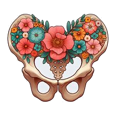
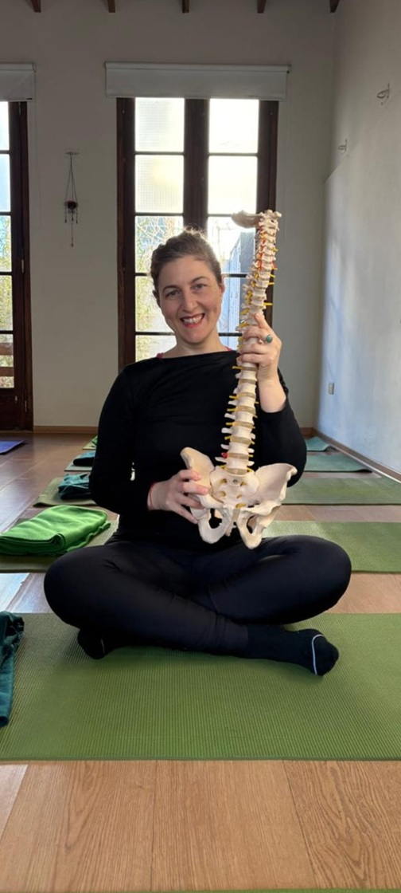

Embarazo
Preparar el cuerpo para el parto, aliviar molestias y aprender a cuidar tu piso pélvico durante los nueve meses.
Consultar por embarazoKinesiología especializada para embarazo, posparto, dolor pélvico e incontinencia. Atención personalizada en Flores y Palermo.
Cada etapa tiene necesidades distintas. Elegí la que más se parece a la tuya y escribime.
Preparar el cuerpo para el parto, aliviar molestias y aprender a cuidar tu piso pélvico durante los nueve meses.
Consultar por embarazoRecuperación después del parto vaginal o cesárea: cicatriz, fuerza, pesadez y vuelta progresiva al movimiento.
Consultar por pospartoDolor en la zona pélvica, lumbar o durante las relaciones sexuales. Se evalúa y se trata, no hay que acostumbrarse.
Consultar por dolorPérdidas de orina al toser, reír o hacer ejercicio, o urgencia para ir al baño. Es frecuente y tiene tratamiento.
Consultar por incontinencia
Es el conjunto de músculos, ligamentos y tejidos que forman una especie de hamaca en la base de la pelvis. Sostiene la vejiga, el útero y el intestino, y participa del control de la orina, de la función sexual y de la postura.
Embarazo, parto, cambios hormonales, esfuerzos repetidos o tensión sostenida pueden alterarlo. Cuando algo no funciona bien, suele avisar.
Que sea frecuente no significa que sea normal. Consultar a tiempo suele acortar el tratamiento.

Kinesióloga · Formada en uroproctoginecología
Matrícula Nacional N° 15483
Acompaño a mujeres en el embarazo, el posparto y en situaciones de dolor pélvico o incontinencia, con un abordaje kinésico personalizado.
Mi forma de trabajar es explicar qué pasa en tu cuerpo, escuchar tu historia y armar un plan que puedas sostener en tu día a día.
Un camino simple, sin vueltas.
Por WhatsApp, mail o con el formulario. Contame brevemente tu motivo de consulta.
Elegimos día, horario y el consultorio que te quede mejor: Flores o Palermo.
Charlamos sobre tu historia y tus síntomas, y definimos juntas cómo seguir.
Dos lugares en CABA para que elijas el más cómodo.
| Lunes (Flores) | 8:00 a 12:00 |
|---|---|
| Lunes (Palermo) | 14:00 a 19:00 |
| Martes a viernes (Palermo) | 8:00 a 13:00 |
Consultá disponibilidad de turnos antes de acercarte.
Estación Carabobo
CABA / Flores
Ver en el mapaFrente al Parque Las Heras
CABA / Palermo
Ver en el mapaSi tenés una paciente que podría beneficiarse de una evaluación de piso pélvico, escribime. Podemos coordinar derivaciones e interconsultas.
Completá el formulario y se abre tu WhatsApp o tu mail con el mensaje listo para enviar. Si preferís, escribime directo.